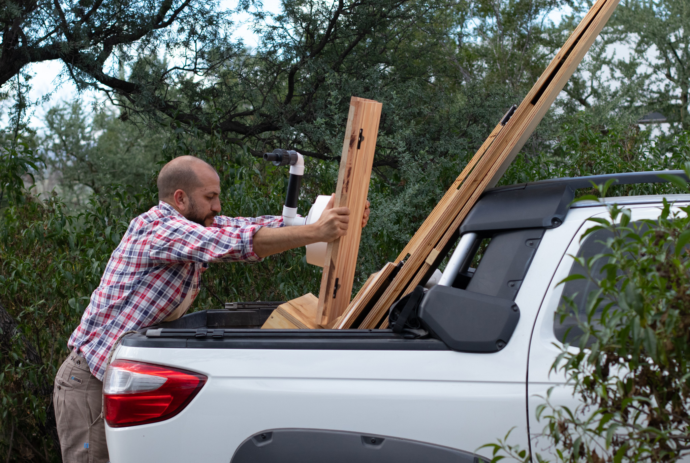

Humanitarian Sanitation
Safe Sanitation.
Anywhere. In Minutes.
Ecological dry toilets for disaster zones, refugee camps and remote communities — no plumbing, no electricity, deployable in minutes.
Traditional sanitation fails when infrastructure does. habitual units work precisely when and where they are needed most.
Flat-packed and assembles in under 30 minutes. No tools, no machinery, no infrastructure required.
Zero plumbing. Zero electricity. Operates in remote areas, disaster zones and wherever water is scarce.
Urine-diverting design eliminates odour. Absorbent materials keep the unit clean between uses.
Waste converts to compost. No leachate, no blackwater, no environmental contamination.
Two models designed for different needs — both built from natural wood, fully off-grid, and zero infrastructure.

A complete outdoor sanitation structure with interior sink, galvanized roof, and optional solar power. Built for permanent or semi-permanent deployment.

A lightweight, flat-packed dry toilet designed for disaster relief, humanitarian missions and off-grid camps. One person, no tools, under 30 minutes.
Simple enough for anyone. No training required.
Ships flat. One person assembles it in under 30 minutes — no tools, no machinery needed.
The separator keeps solids and liquids apart, eliminating odour without chemicals or flushing.
Solid waste becomes compost over time. Liquid waste can be diluted and used as fertilizer.
habitual began in Argentina in 2021. By 2024, more than ten units had been sold and remain in active use — built from real-world feedback and hands-on experimentation in the field.
Now based in Switzerland, habitual is bringing this proven solution to European humanitarian organizations and NGOs operating globally.
Read Our Story
We work with NGOs, humanitarian organizations and governments to design and deliver sanitation pilots in the field.
Start a Conversation